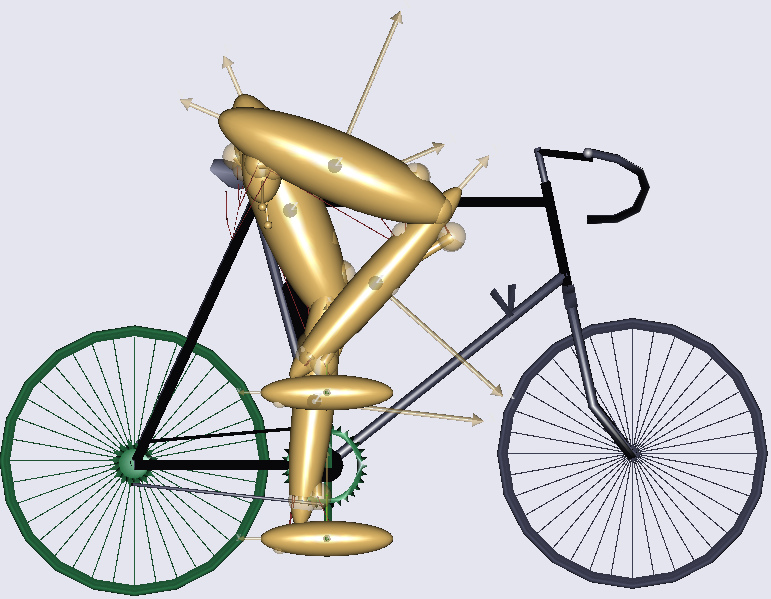
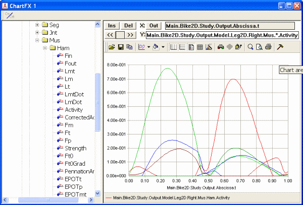
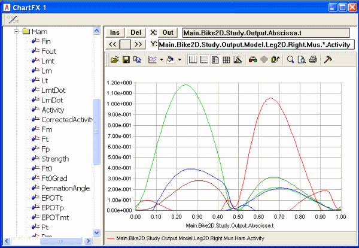
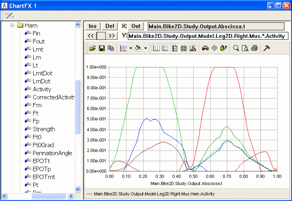
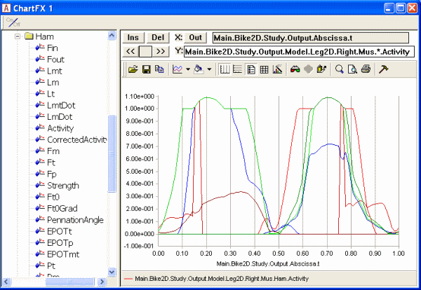

Lesson 3: Quadratic Muscle Recruitment#
Old tutorial:
This tutorial has not yet been updated to ver. 7 of the AnyBody Modeling System. Some concepts may have changed.
The simple example of the previous lesson was enough to show us that linear muscle recruitment is not going to mimic the physiological behavior of living bodies very well. The next logical step would be to try a quadratic criterion, which we can formulate like this:
Compared with the linear criterion from the previous lesson, a quadratic criterion penalizes large terms in the sum, so it is likely that this would distribute the load between several muscles rather than recruiting only a minimum number of them.
Quadratic muscle recruitment is often used in the biomechanical literature and many scientists support this method. Its muscle recruitment often agree well with experimental measurements of muscle activity and the resulting joint reaction forces have also been shown in several cases to agree well with experimental data. Physically, the method is related to well-known concepts such as the root mean square of a series of numbers and also to the field of elasticity. It is a fact that, had the muscles been purely linear passive-elastic elements capable of pushing as well as pulling, then the force distribution over the muscles would become quadratic, owing to the fact that the elastic energy stored in a muscle would be a quadratic function of the force it carries.
Before we try it out, let us set up a model that makes more
physiological sense than the previous one. Please download and savethis zip file and unpack it into some working
directory. Then open AnyBody and load the file Bike2D.main.any. After
you have compiled the model into memory you can open up a Model View
window and see this picture:

This is a simple two-dimensional model of two legs pedaling a bicycle, but it captures many of the complexities of muscle recruitment in real biological systems: closed kinematic chains, muscle redundancy, changing moment arms, changing force magnitudes and directions.
In the editor window containing Bike2d.main.any, scroll down to the bottom of the file where you find the study section. This study has no particular settings, but a few additional lines will define a quadratic criterion:
// The study: Operations to be performed on the model
AnyBodyStudy Study = {
AnyFolder &Model = .Model;
Gravity = {0.0, -9.81, 0.0};
tEnd = Main.BikeParameters.T;
nStep = 100;
InverseDynamics.Criterion = {
Type = MR_Quadratic;
UpperBoundOnOff = Off;
};
};
Now reload the model, expand the study tree in the Operation window on the left hand side of the mainframe, pick InverseDynamics by clicking it once and click the Run button. This should start the analysis and the bicycle starts running the in Model View window.
After the analysis is completed, click Window->ChartFX to open a window where we can examine graphs. Navigate in the tree on the left hand side of the window through Study, Output, Model, Leg2D, Right, Mus, and expand the branch for one of the muscles, for instance Ham, which is the hamstring muscle. You will find Activity among the properties that can be plotted. Select it and then replace the muscle name by an asterisk to simultaneously plot the activities of all the muscles.

Muscle activity in AnyBody is defined as the f/N property that we minimized as a square sum over all the muscles. In other words, muscle activity is a measure of the force in a muscle relative to its strength. The resulting graphs show that Several muscles are active simultaneously and that they are active to different degrees as the movement progresses. If you hold the mouse over each of the curves a little window will pop up and tell you the name of the muscle. The green curve that peaks in the beginning of the cycle, for instance, is the vasti muscles, i.e. the large muscles on the frontal side of the thigh.
You can also see that the maximum muscle activity is around 0.78, i.e. 78 percent. The advantage of plotting activities is that a given muscle is loaded to its maximum strength when its activity is 100 percent. This is also called Maximum Voluntary Contraction, or MVC.
So the graphs show that this is a rather strenuous pedaling activity. The reason is obvious if you look further up in the Bike2D.main.any file. Near the top of the file, a number of parameters are available for the user to set:
// Kinematic parameters
AnyVar Cadence = 60.0; //Cadence in RPM
AnyVar MechOutput = 400; //Average Mechanical output over a cycle in Watt
The mechanical output has been set to 400 W at a cadence of only 60 rpm and this will require most of the strength of the rider.
Try increasing the load to 600 W, reload the model, rerun the analysis, and plot the muscle activities again. Now you should get the following picture:

The recruitment pattern is very similar to the previous one, but the recruitment of the vasti as well as the hamstrings now exceeds 100 percent. This is obviously not physiologically possible, and muscle recruitment with a quadratic criterion therefore usually has an additional constraint defined, requiring the activation of the muscles not to exceed 100 percent. We can switch this constraint on by placing double slashes in front of a line in the definition of the quadratic criterion:
// The study: Operations to be performed on the model
AnyBodyStudy Study = {
AnyFolder &Model = .Model;
Gravity = {0.0, -9.81, 0.0};
tEnd = Main.BikeParameters.T;
nStep = 100;
InverseDynamics.Criterion = {
Type = MR_Quadratic;
// UpperBoundOnOff = Off;
};
};
Now, please reload, rerun and replot. The result should be the following:

This is significantly different from what we had before. The activities beyond 100 percent have been cut off, and the submaximally activated muscles increase their activation to balance the external load.
The fact that we initially had to explicitly define UpperBoundOnOff = Off shows that the standard setting of the Quadratic is to have the bound on. This makes physiological sense. The figure right above shows that it is in fact possible for the organism to carry the load without overloading the muscles, so a solution like the previous one that predicts that the organism cannot carry the load is not satisfactory.
Of course, the organism does have an upper limit to how much load it can carry. Let us investigate what happens when we increase the load further to 800 W:
// Kinematic parameters
AnyVar Cadence = 60.0; //Cadence in RPM
AnyVar MechOutput = 800; //Average Mechanical output over a cycle in Watt
Reloading and rerunning produces this result:

As the model runs, you will receive a warning: “Overloaded muscle configuration.” This is AnyBody’s warning that there is no way within the upper bound constraint of 100% muscle activation that the model can recruit the muscles; they are simply not strong enough to carry the external load. AnyBody’s reaction is to change to another recruitment algorithm that is capable of handling overloaded muscles in the time steps when the Quadratic algorithm cannot handle the case within its bounds. We are going to return to this algorithm, the MinMax algorithm, in more detail later in this tutorial. For now, it suffices to say that the solution of the MinMax algorithm and the Quadratic algorithm with upper bounds is the same at the single point where the organism is exactly 100% loaded. The points where the shift between the algorithms take place are clearly identifiable as the points where the envelope of muscle activation exceeds 1.
It is important to emphasize that muscle activation beyond 1 is not physiological, so it might have made sense for AnyBody not to return a solution at all. But that would not have been very helpful. It would leave the user with no clue about why the organism is overloaded or how much. The method you see here allows the user to investigate the problem and make the necessary changes to the model or at least quantify its overloaded.
There are properties of the quadratic algorithm, however, that are somewhat unsatisfactory: While it requires the upper bounds to extract the maximum strength from the organism, the same upper bounds tend to produce activation curves with kinks that seem to leave a non-physiological impression. It seems like the key to avoiding this would be to get the muscles to be more synergistic. How that might be done is the topic of Lesson 4: Polynomial Muscle Recruitment.